Guía práctica para registrar, buscar y dar seguimiento a paquetes internos. Está escrita para que la pueda usar personal de bodega, oficina, supervisión y gerencia.
SistemaappTrackingPaquetesAPA
Fecha del documento15 de junio de 2026 a las 4:22 p. m.
Acceso al sistemahttp://localhost:3180
ResponsableIng. Alexander Varela
Este documento explica qué hacer en cada pantalla, dónde presionar y qué revisar antes de guardar información.
Indice
Para qué sirve el sistema
Roles y permisos
Reglas básicas de uso
Inicio de sesión
Pantalla de inicio
Menu lateral
Paquetes
Registrar paquete
Consolidar paquetes
Detalle e impresión
Seguimiento
Problemas reportados
Comprobantes y archivos de respaldo
Personal, ubicaciones y estados
Informes
Errores comunes
Buenas practicas
1. Para qué sirve el sistema
appTrackingPaquetesAPA ayuda a llevar control de los paquetes internos: quién los envía, hacia dónde van, en qué estado están, qué problema tuvieron y qué comprobante se adjuntó.
La guía es el número que identifica cada paquete. El formato actual es APA-000001. El sistema crea ese número automáticamente; el usuario no debe inventarlo ni escribirlo a mano.
Forma sencilla de entenderlo: la guía es como el número de turno del paquete. Con ese número se busca rápido y se evita confundir un paquete con otro.
2. Roles y permisos
Parte del sistema
Qué significa en palabras sencillas
Para qué le sirve a supervisión o gerencia
Administrador
Puede revisar y mantener la mayor parte del sistema.
Ayuda a controlar usuarios, lugares, reportes y el trabajo general.
Usuario
Puede registrar y consultar paquetes según los permisos asignados.
Sirve para el trabajo diario en bodega, oficina o cualquier área que envía paquetes.
Motorista
Puede revisar paquetes asignados y registrar avances de entrega.
Ayuda a saber por dónde va el paquete y qué pasó durante el traslado.
3. Reglas básicas de uso
No comparta su usuario ni contraseña.
Revise bien de dónde sale el paquete, hacia dónde va, quién lo envía y quién lo recibe antes de guardar.
Use descripciones claras. Ejemplo: Factura original de proveedor, no escriba solo Documento.
Si algo sale mal, registre el problema en el sistema.
Si tiene una foto, PDF o comprobante, súbalo como respaldo.
Al terminar, cierre sesión desde el botón de usuario.
Inicio de sesiónPantalla donde se escribe el usuario y la contraseña para entrar.
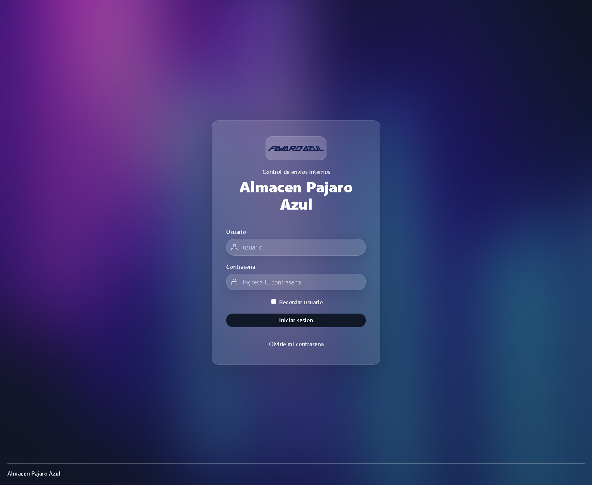
123
1. Aquí se escribe el correo o usuario asignado.
2. Aquí se escribe la contraseña.
3. Botón para entrar al sistema.
4. Cómo iniciar sesión
Abra el navegador.
Entre a http://localhost:3180/login.
Escriba el correo asignado.
Escriba la contraseña.
Presione el botón de inicio de sesión.
Si los datos son correctos, verá la pantalla de inicio.
Pantalla de inicioResumen rápido del trabajo: paquetes registrados, problemas y comprobantes.
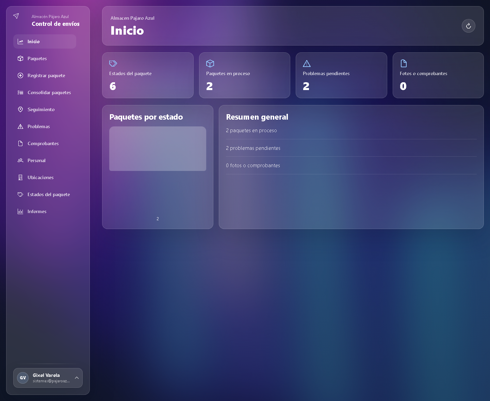
123
1. Menú lateral para entrar a las demás pantallas.
2. Cuadros con números importantes del día.
3. Resumen visual para revisar cómo va la operación.
5. Cómo leer la pantalla de inicio
Para bodega u operación, esta pantalla ayuda a saber cuántos paquetes hay, cuántos problemas se han reportado y si existen comprobantes cargados.
Para supervisión o gerencia, sirve como una vista rápida del movimiento de paquetes y de los puntos que necesitan atención.
Lista de paquetesPantalla principal para buscar paquetes y abrir su información.
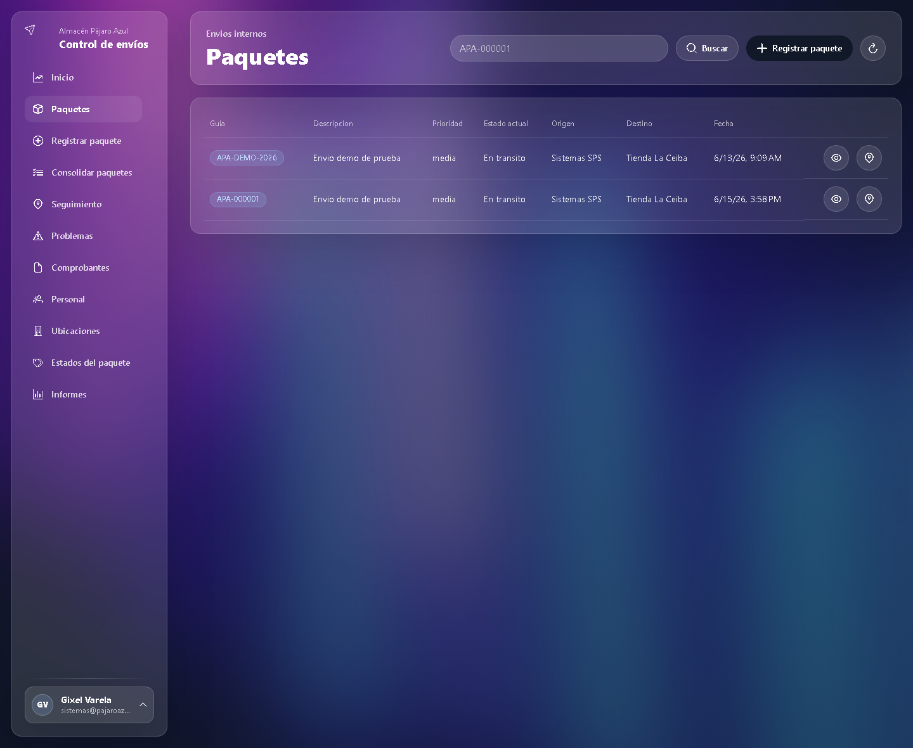
1234
1. Nombre de la pantalla en la que está trabajando.
2. Buscador para escribir la guía del paquete.
3. Botones para registrar o actualizar información.
4. Opciones para ver el paquete o revisar sus movimientos.
6. Paquetes
Entre al menú Paquetes.
Revise la lista de paquetes registrados.
Para buscar un paquete, escriba una guía como APA-DEMO-2026.
Use Ver detalle para revisar toda la información.
Use Seguimiento para ver los movimientos del paquete.
Registrar un paqueteFormulario para crear un paquete nuevo.
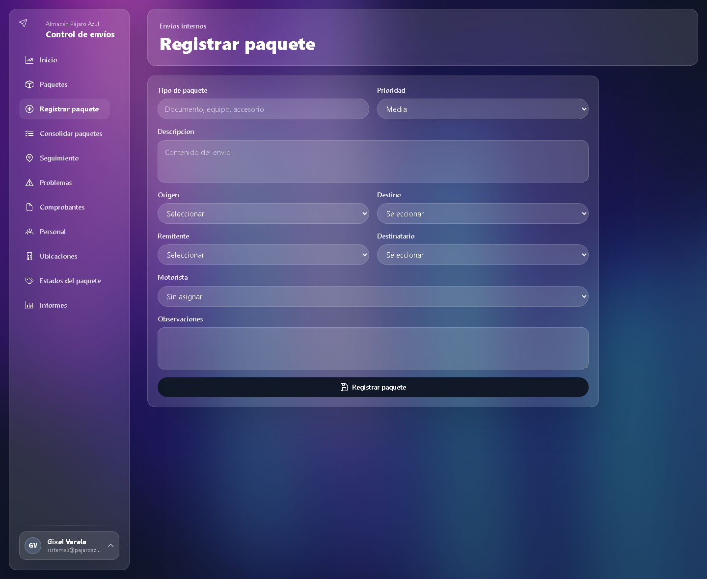
123
1. Tipo de paquete, prioridad y descripción.
2. De dónde sale, hacia dónde va, quién envía y quién recibe.
3. Botón para guardar el paquete.
7. Registrar un paquete
Presione Registrar paquete.
Seleccione el tipo de paquete y la prioridad.
Escriba una descripción clara.
Seleccione origen y destino.
Seleccione remitente y destinatario.
Seleccione motorista si aplica.
Presione Registrar paquete.
El sistema guarda el paquete y crea su guía automáticamente.
Registrar varios paquetes juntosPantalla para preparar varios paquetes y guardarlos al final.
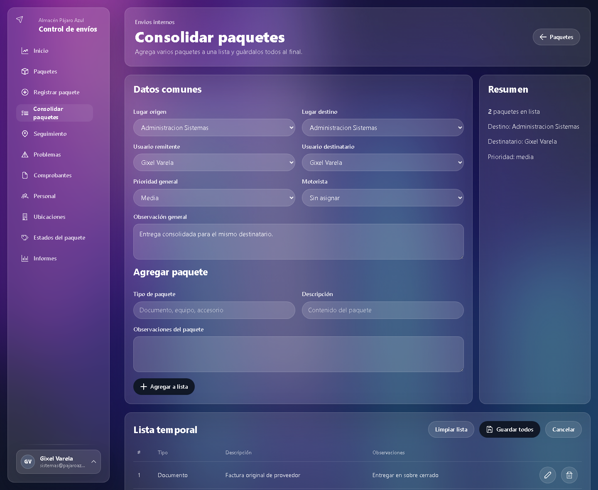
1234
1. Datos que se repetirán en todos los paquetes.
2. Formulario para agregar cada paquete a la lista.
3. Resumen de lo que se está preparando.
4. Lista temporal: permite revisar, editar o quitar antes de guardar.
8. Registrar varios paquetes juntos
Use esta pantalla cuando varios paquetes tienen datos parecidos, por ejemplo el mismo destino o la misma persona que recibe. Mientras solo agregue paquetes a la lista, todavía no quedan guardados de forma definitiva.
Seleccione los datos que se repetirán: origen, destino, remitente, destinatario y prioridad.
Escriba tipo, descripción y observaciones del primer paquete.
Presione Agregar a lista.
Repita el proceso para cada paquete adicional.
Revise la lista antes de guardar.
Si un dato está mal, use Editar. Si un paquete no debe ir, use Quitar.
Presione Guardar todos cuando la lista esté correcta.
El sistema crea cada paquete por separado y genera una guía para cada uno.
Ejemplo: si guarda tres paquetes, el sistema puede crear APA-000001, APA-000002 y APA-000003. Cada guía se busca después por separado.
Detalle del paqueteVista completa de un paquete ya registrado.
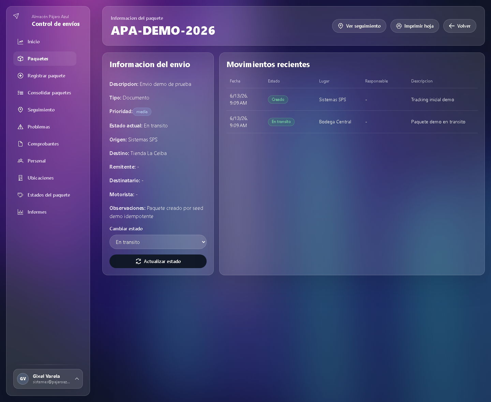
123
1. Número de guía y datos principales.
2. Botones para ver movimientos o imprimir.
3. Datos importantes del envío.
9. Detalle del paquete
El detalle sirve para confirmar toda la información de un paquete. Desde aquí se revisa la guía, prioridad, origen, destino, personas relacionadas y observaciones.
Hoja para imprimirFormato limpio para imprimir la hoja del envío interno.
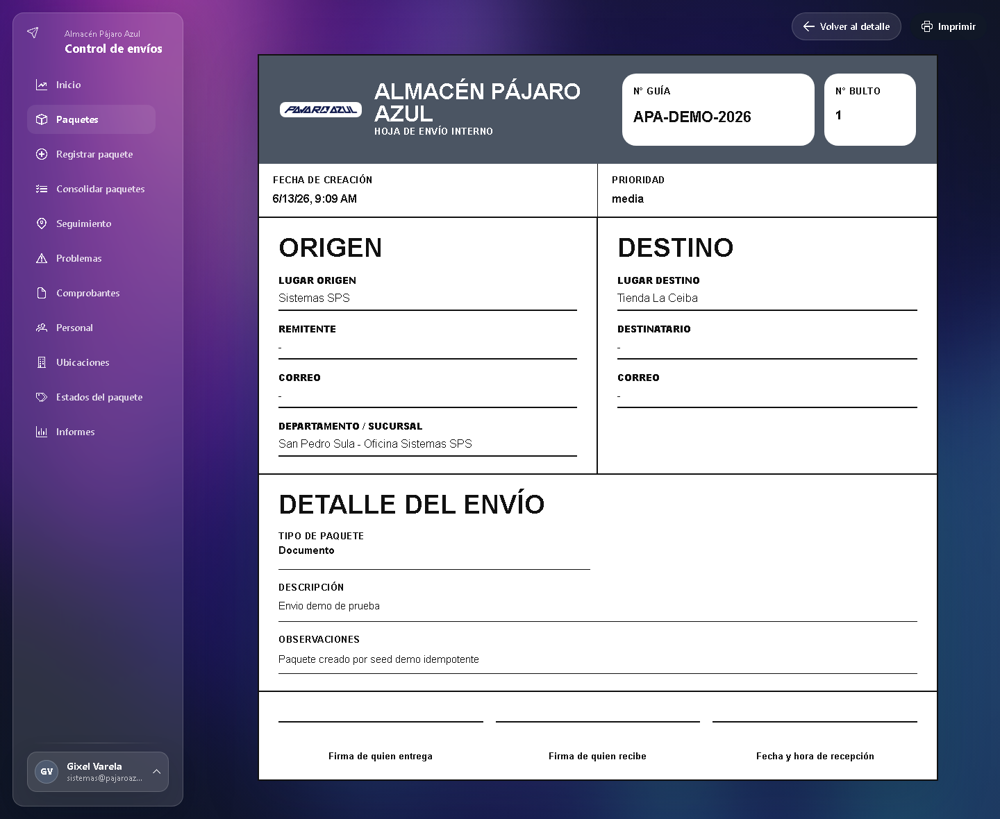
123
1. Encabezado con logo y guía.
2. Datos de origen y destino.
3. Detalle del envio y firmas.
10. Imprimir hoja de envio
Abra el detalle del paquete.
Presione la opcion de impresion si esta disponible.
Revise que la guía, origen, destino y descripción sean correctos.
Presione Imprimir.
En la impresión no deben salir menú lateral ni botones del sistema.
Seguimiento por guíaHistorial de movimientos del paquete.
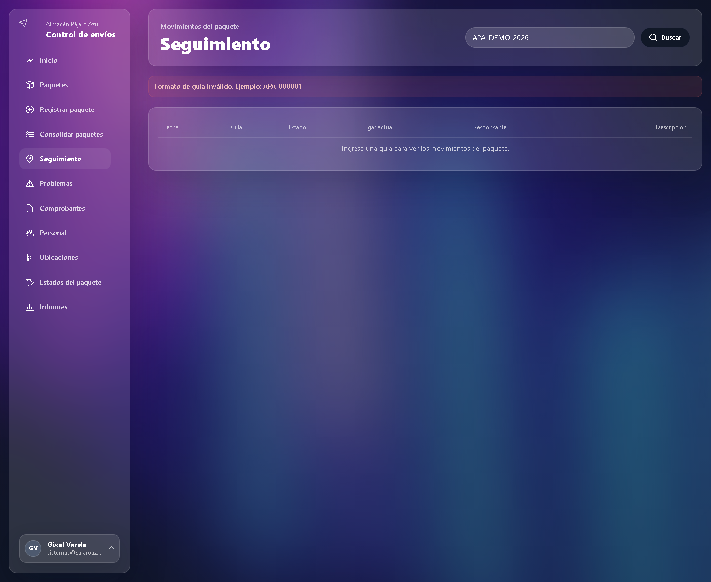
1234
1. Campo para buscar por guía.
2. Fecha del movimiento.
3. Estado y ubicación del paquete.
4. Descripción del evento.
11. Seguimiento
Seguimiento responde a la pregunta: qué ha pasado con este paquete. Cada movimiento queda ordenado por fecha.
Entre a Seguimiento.
Escriba una guía, por ejemplo APA-DEMO-2026.
Presione Buscar.
Revise la tabla de movimientos.
Problemas reportadosPantalla para registrar y revisar problemas encontrados con un paquete.
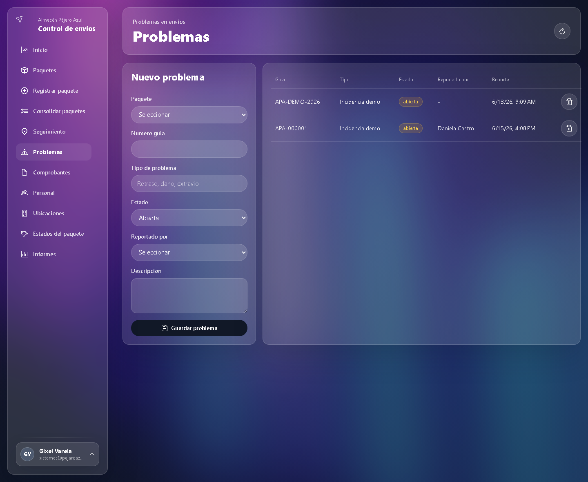
123
1. Campos para buscar o registrar un problema.
2. Lista de problemas registrados.
3. Acciones disponibles según el permiso del usuario.
12. Problemas
Registre un problema cuando algo no vaya normal: paquete demorado, dato incorrecto, entrega incompleta, extravío o daño.
Comprobantes y archivos de respaldoPantalla para consultar o subir archivos relacionados con un paquete.
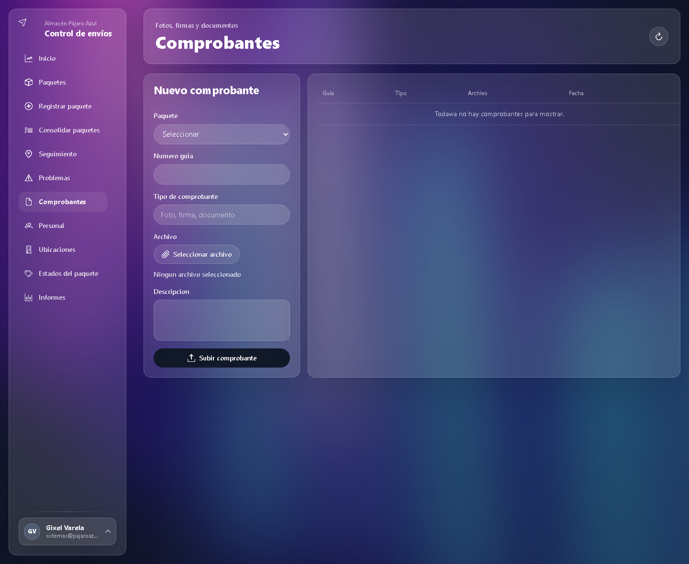
123
1. Datos para relacionar el archivo con el paquete.
2. Listado de comprobantes existentes.
3. Botones para cargar o descargar archivos.
13. Comprobantes
Use comprobantes para respaldar una entrega, un problema o una recepción. Los archivos permitidos son JPG, JPEG, PNG y PDF, con límite de 5 MB.
PersonalPantalla para mantener las personas que usan el sistema.
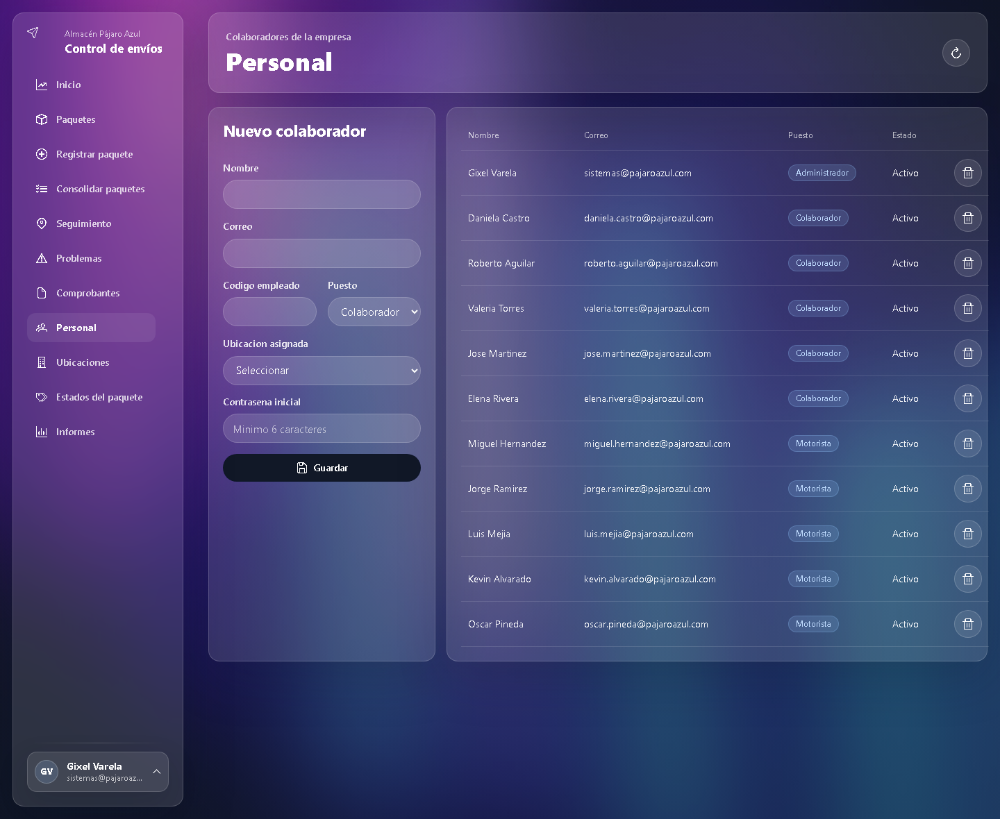
123
1. Formulario o resumen de la persona.
2. Lista de personal registrado.
3. Acciones de mantenimiento.
UbicacionesLista de sucursales, bodegas o departamentos.
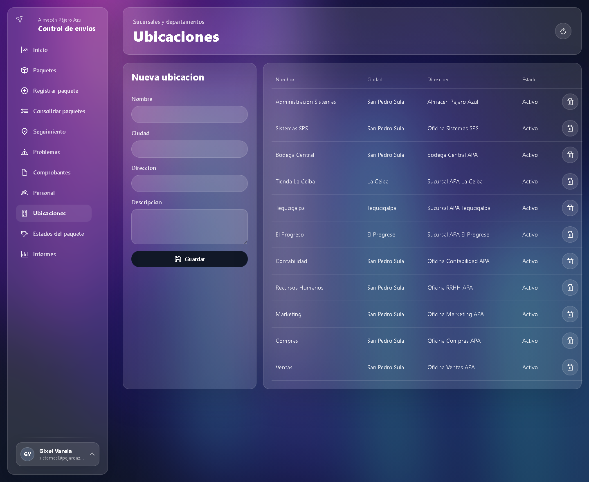
12
1. Datos de la ubicación.
2. Listado de ubicaciones.
Estados del paqueteLista de etapas que puede tener un paquete.
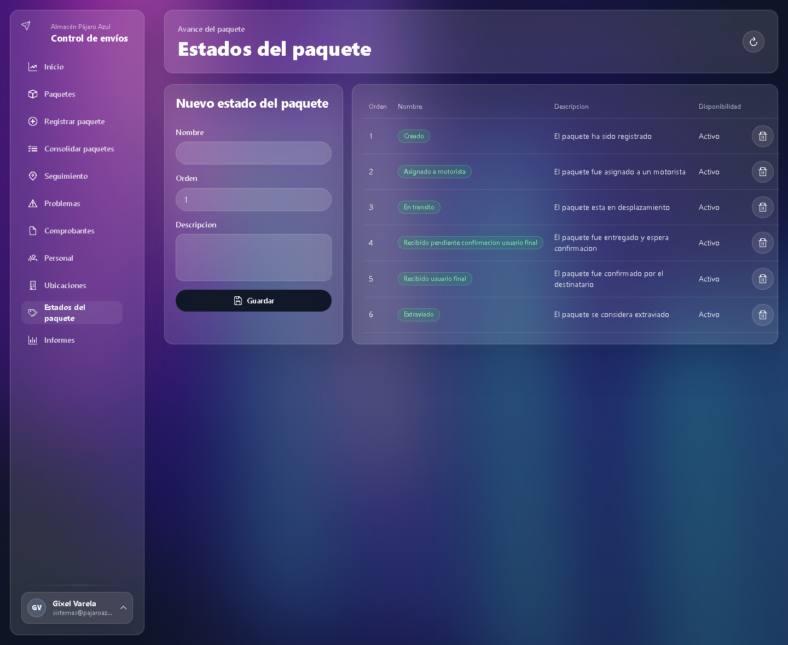
12
1. Nombre y orden del estado.
2. Listado de estados configurados.
14. Personal, ubicaciones y estados
Estas pantallas sirven para mantener ordenada la información base. Si estos datos están bien, al registrar paquetes se cometen menos errores.
Parte del sistema
Qué significa en palabras sencillas
Para qué le sirve a supervisión o gerencia
Personal
Registra usuarios, motoristas y administradores.
Controla quiénes pueden entrar y qué rol tienen.
Ubicaciones
Registra lugares de origen, destino o trabajo.
Permite revisar movimientos por área o sucursal.
Estados
Define las etapas del paquete.
Evita que cada persona escriba un estado diferente para la misma situación.
InformesPantalla para revisar resúmenes útiles de la operación.
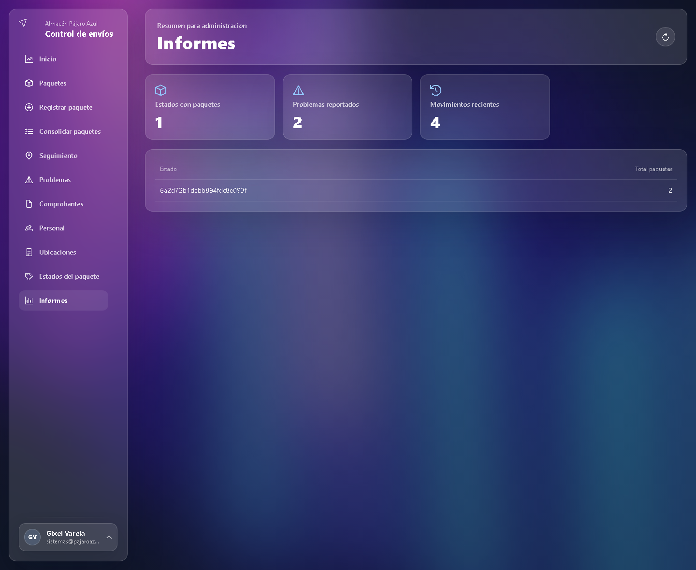
12
1. Opciones de informes disponibles.
2. Resultados de paquetes, problemas o actividad.
15. Informes para supervisión
Los informes muestran información reunida en un solo lugar. Para gerencia, ayudan a ver cuántos paquetes se mueven, qué problemas siguen pendientes y qué actividad reciente existe.
16. Errores comunes y que hacer
Parte del sistema
Qué significa en palabras sencillas
Para qué le sirve a supervisión o gerencia
Guía mal escrita
La guía debe verse como APA-000001.
Evita búsquedas con códigos viejos o mal escritos.
Datos incompletos
Falta un campo obligatorio o el dato no tiene el formato correcto.
Ayuda a guardar información limpia y confiable.
No tiene permiso
El usuario no puede hacer esa acción.
Protege pantallas administrativas o delicadas.
Paquete no encontrado
La guía no existe o el usuario no tiene acceso a ese paquete.
Puede indicar error al escribir la guía o falta de permiso.
Archivo no permitido
Solo se aceptan JPG, JPEG, PNG o PDF hasta 5 MB.
Evita archivos pesados o formatos que no corresponden.
17. Buenas practicas
Para bodega y usuarios operativos
Escriba descripciones claras y fáciles de entender.
Revise destino y destinatario antes de guardar.
Use Registrar varios paquetes juntos cuando son varios paquetes para la misma persona.
Suba comprobantes cuando tenga una foto, PDF o respaldo útil.
Cierre sesión al terminar.
Para supervisión y gerencia
Revise la pantalla de inicio e informes con frecuencia.
Observe problemas abiertos.
Mantenga usuarios y ubicaciones actualizados.
Pida que cada movimiento importante quede registrado.